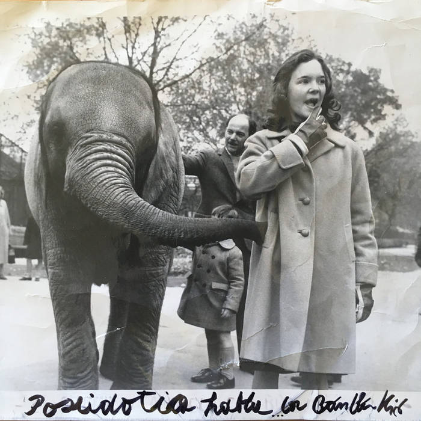
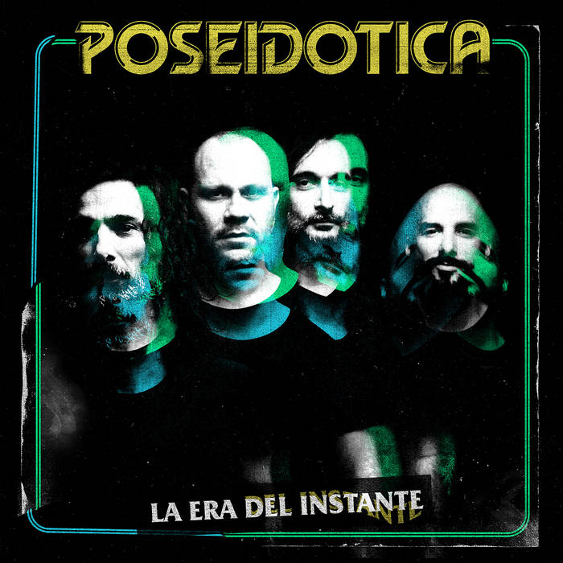
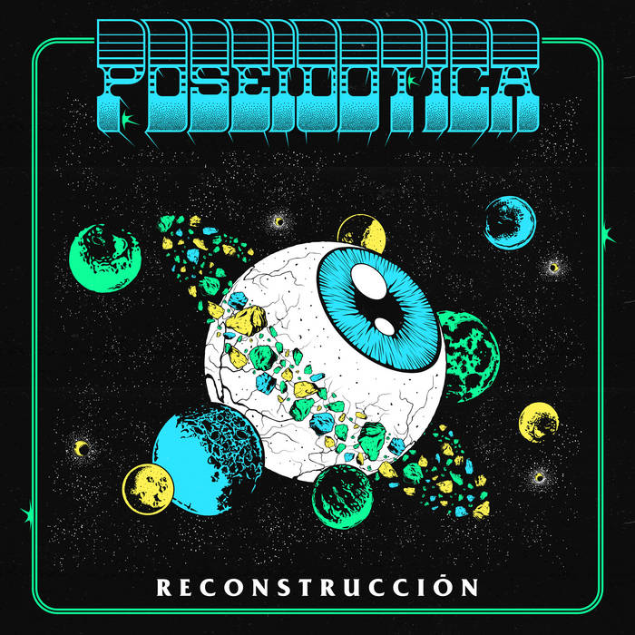
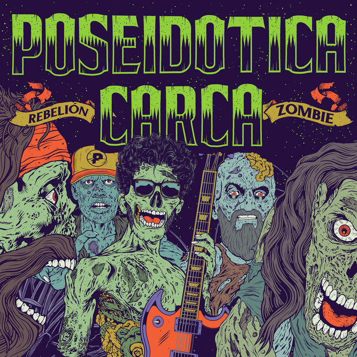
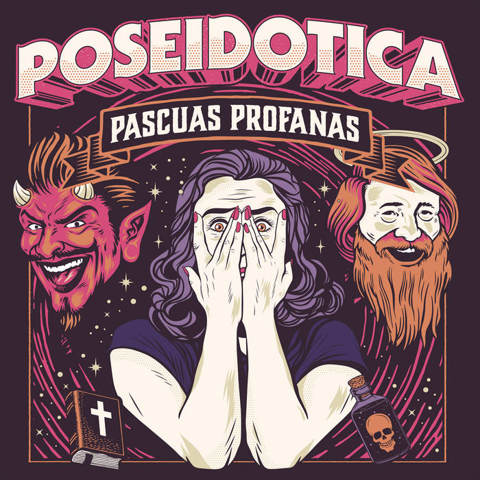

Discografía





Pascuas profanas (en vivo)
Album en vivo grabado el 12 de Abril de 2017 en Niceto Club.
- Introducción santa
- Tiempo y espacio
- Elevación
- Los extraños
- Hidrofobia
- Holograma
- El dilema del origen
- Intermezzo de resurrección
- Anfibio
- Tantra
- Viaje de agua
- El alma de las máquinas
- Videogame
- Dimensión vulcano
- Mantra